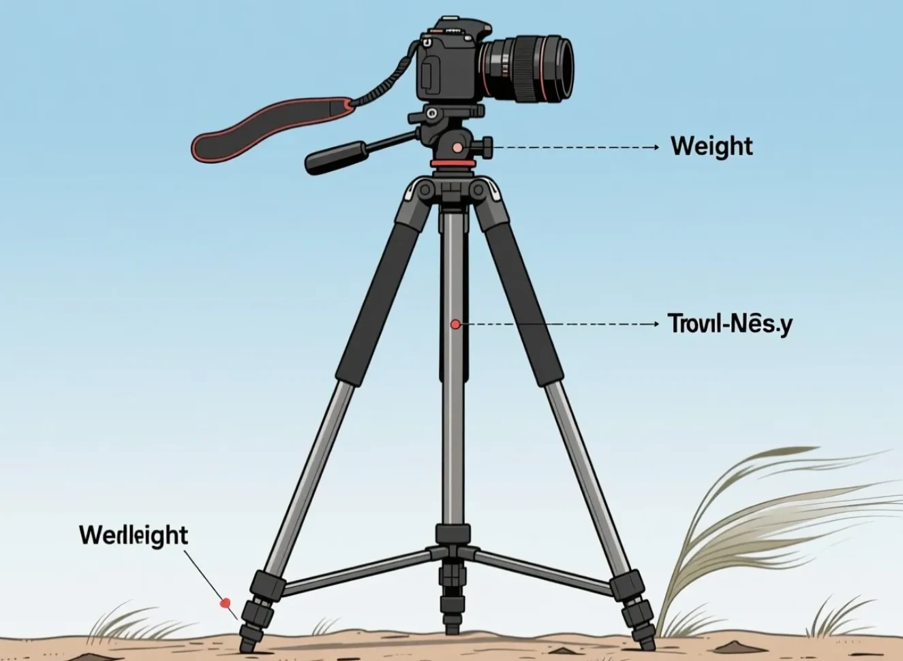
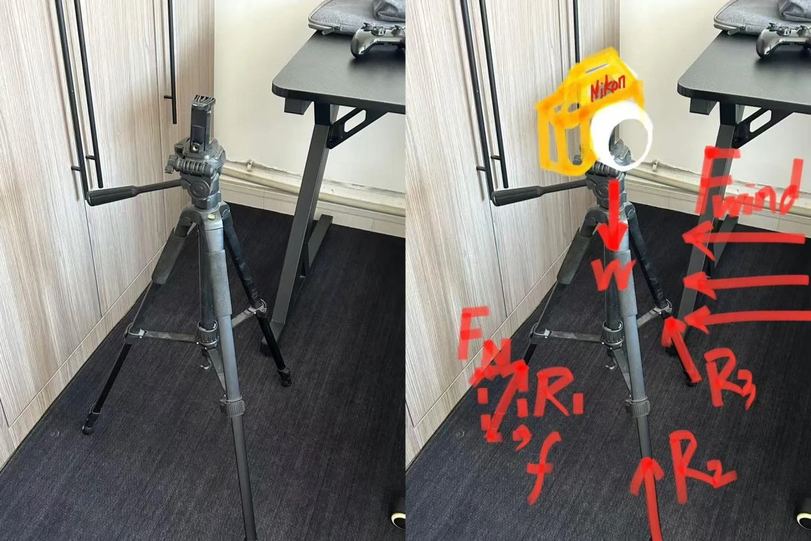
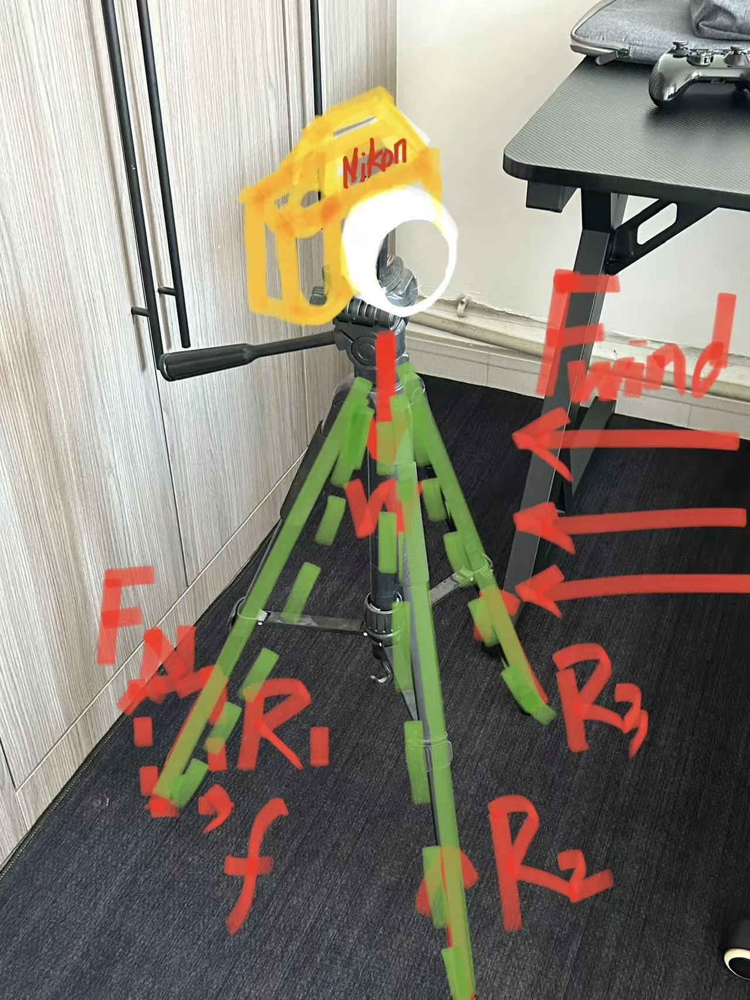
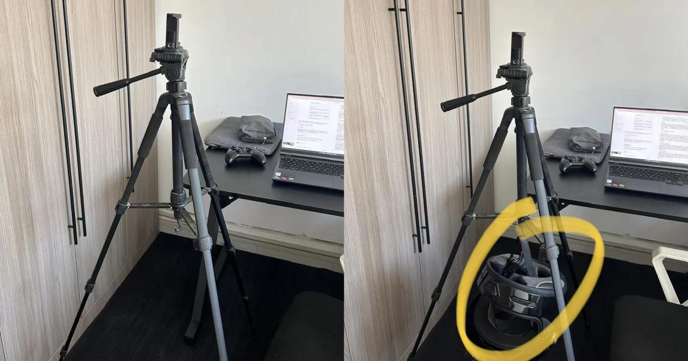

大连交通大学 · 智能建造23
我的原作在生活中感知结构概念
李京祚
相机三脚架作为支撑类构件，核心力学意义是通过三角形稳定结构抵消相机自重、拍摄震动及外部荷载（如微风、触碰），实现竖向承载与水平抗侧移的双重功能，保障拍摄画面清晰，避免因构件变形或失稳导致设备损坏。其力学性能直接决定支撑可靠性，是“结构承载能力”与“使用功能”匹配的典型案例。
1.影响因素：
结构参数：支架腿长度、截面尺寸、展开角度（影响力臂与支撑面积）；
材料性能：支架管材的弹性模量（如铝合金、碳纤维的刚度差异）、强度极限；连接节点：支架腿与顶部云台的铰接方式（转动灵活性与传力效率）、锁止机构的紧固程度；
荷载条件：相机及镜头的总重量（竖向均布荷载）、外部横向荷载（如风力、操作触碰的集中荷载）。
2.力学趋势：
当三脚架展开角度增大（支撑面积扩大）、支架腿截面惯性矩提高（管材加粗或采用空心结构）时，结构整体刚度提升，最大挠度减小，稳定性增强；反之，若荷载超过构件承载极限，会出现支架腿弯曲变形、节点松动甚至整体倾覆（失稳破坏）。

3.受力示意：
相机重力 W
↓
┌─────────────┐
│ 云台 │
└──────┬──────┘
│ Ry
│←─────── Rx
┌──────┴──────┐
│ 主支柱 │ ← 轴向压力 N
└──────┬──────┘
│←─────── 水平力 H（风载）
┌──────┴──────┐
│ 支腿铰接点 │ ← 支腿反力 Ri
└──────┬──────┘
▲
───────┼───────
▼
地面反力 Rg

在对称展开（开角≈60°）时，三支点形成等边三角形，支撑面积最大，整体稳定性最佳。

生活中三脚架的设计完全围绕力学平衡展开：
采用三角形支撑结构，利用三角形 “不可变形” 特性提高整体稳定性，避免平面结构的侧向倾倒；
支架腿采用空心圆管截面，相比实心杆，在相同重量下可显著提高截面惯性矩，增强抗弯、抗压刚度（如碳纤维管的弹性模量 E=230GPa，远高于普通铝合金，变形更小）；
底部橡胶垫增大摩擦系数，通过 “被动约束” 抵抗横向荷载，防止滑移；
云台与支架腿的铰接设计，允许调整拍摄角度的同时，保证荷载均匀传递至三条支架腿，避免单条腿过载。

加重块增加了支点的垂直反力，等效提升了接触圆半径，提升了抗倾覆安全系数
对照《结构设计原理》内容
1. 受力模型的对应
《结构设计原理》把三脚架抽象为”三力平衡结构”（两个向下力、一个向上支反力），与实际受力图完全吻合,该模型强调”力的闭合三角形”原则，正是三脚架利用三角形几何稳定性的理论依据。
2. 材料与截面刚度
在《材料力学》中，构件的”刚度 EI”决定其在受弯时的变形。铝合金的弹性模量 E≈70 GPa，碳纤维 E≈230 GPa，说明相同截面下碳纤维的弯曲刚度约为铝的3倍，从而解释材料对三脚架抗弯性能的差异。
3. 钢筋（内部加固）类比
《结构设计原理》对”受弯构件的钢筋配置”有明确规定：宽度 b 小于400 mm 时采用单排钢筋，大于400 mm 时采用双排或多排钢筋，以保证受拉区的钢筋面积满足弯矩需求。将这一原理类比到三脚架的”内部加固”：在腿的中段（受拉区）可嵌入细钢筋或碳纤维束（相当于“双排钢筋”），在受弯时提供额外的抗拉能力，提升整体刚度。
4. 锚固与节点刚度
《结构设计原理》指出”锚固长度”必须满足 ≥1.2 lₐ 或 ≥300 mm，以确保钢筋在混凝土中的有效作用[[14]]。对应到三脚架的”锁紧螺纹或卡扣节点”，同样需要足够的锁紧长度和预紧力，以防止节点在受力时产生滑移。
5. 屈曲与临界荷载
结构设计中对”屈曲临界荷载”的计算（Euler公式）要求构件的细长比满足安全裕度。三脚架的腿部在长细比上往往接近临界值，因而在设计时需通过”加粗截面、加装加重块或使用高模量材料”来提升屈曲安全系数，这与《结构设计原理》对构件细长比的控制思路一致。
6. 设计趋势的理论支撑
轻量化：选用高模量、低密度材料（碳纤维）符合“在满足强度的前提下最大化刚度/质量比”。
模块化加固：在关键受拉部位采用“双排钢筋”或“内部碳纤维束”，对应《结构设计原理》中对受弯构件钢筋排数的要求。
智能锁定：通过预紧力提升节点刚度，等价于在钢筋锚固区增加“锚固长度”，确保受力时节点不产生相对位移。
通过三脚架这一日常器材，我们直观看到了《材料力学》中的“压杆稳定”“截面刚度”、《结构设计原理》中的“抗倾覆”“节点构造”等知识。结构设计的精髓，正是将这些抽象原理，转化为可触摸、可感知的可靠生活体验。
这是一份便于网页阅读的原作视图，保留提交内容的文字、图片和基本顺序；公开页面不显示学号。